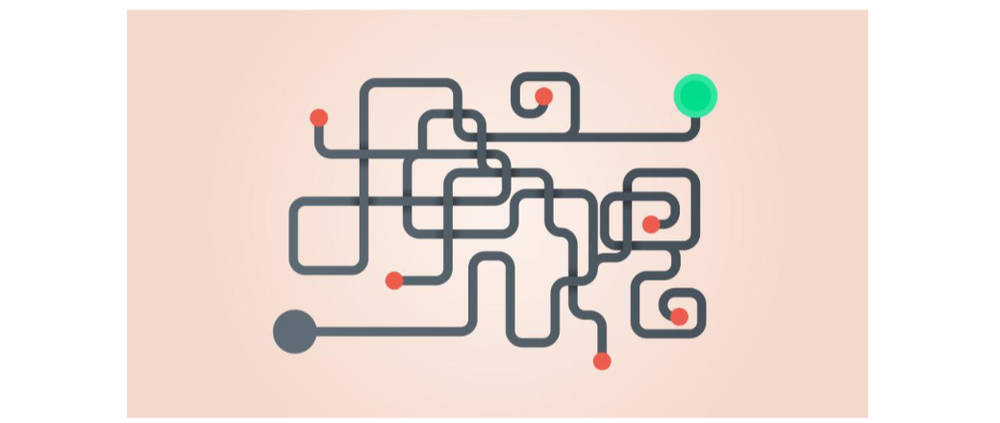
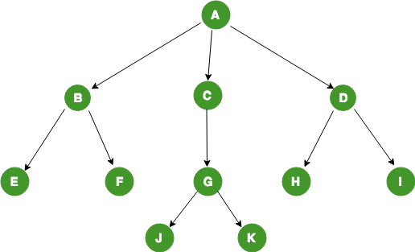
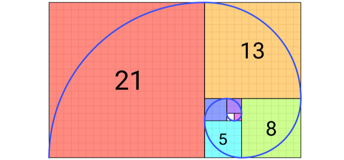
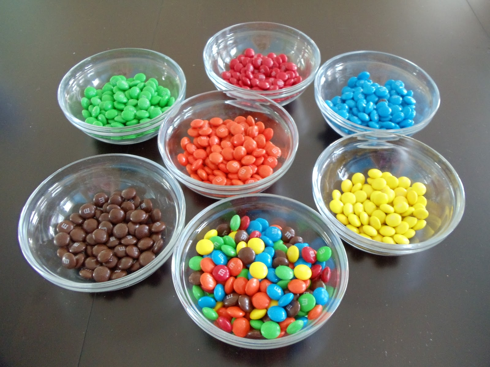
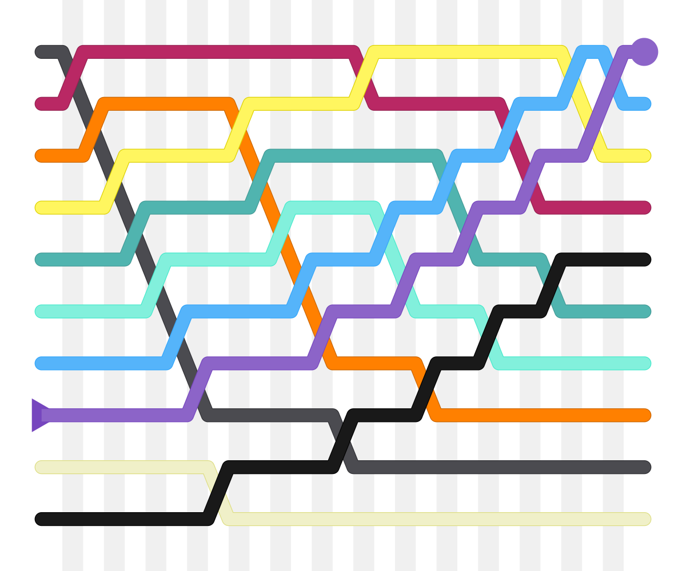

PSTAT 10 Data Science Principles
Lecture 5: Algorithms
![]()
August 22, 2026
Introduction
🔁 Review: Lecture 4
👈 Last lecture we explored some automation methods such as:
- Functions
- Branching (
if,else,else if) - Looping:
- For Loops
- While Loops
- Repeat & Break Loops
- Control Flow
👀 Outline: Lecture 5
👇 This lecture we will shift our focus to problem solving, including:
- Algorithmic Thinking
- Branching Logic
- Iterative Logic
- Recursive Logic
Algorithms
📊 Data Science
What is Data Science?
- Data science is a combination of subjects including:
- ➕ Math
- 📊 Statistics
- 👨💻 Programming
- 💻 Computer Science
- 🤖 Machine Learning
Data All Around Us
- Data is the single most prolific commodity in the world with over 1 trillion GB being generated per day.
- This is far too much for any human to handle, so we are required to develop automated procedures using algorithms.
🧮 What is an Algorithm?

Algorithm
An algorithm is a process / set of rules performed sequentially to solve some kind of problem.
- The rules are often mathematical but can be thought of as general functions.
- We have all used algorithms before, particularly in math classes whenever we learned to solve a problem in several steps: calculus and integral rules, long division, algebra etc.
🌳 Branching Algorithms
Branching Algorithm
Branching algorithms can be visualized as a case-dependent tree structure, where each branch determines which steps the algorithm applies.

Example — Branching Algorithm
Checking the length of a character string
- Here is a simple example of a branching algorithm that checks that the length of a character string is greater than 5 characters.
- If the string is greater than 5 characters, the algorithm returns
TRUE, otherwise it returnsFALSE.
[1] TRUE- For more complicated logic, we can use nested branching to check multiple conditions in a single algorithm.
🪆 Nested Branching Statements
Branching statements can be nested inside one another — an if / else if / else block can contain another complete branching block.
- This is useful when a decision depends on more than one condition, checked one at a time.
- The general structure looks like:
Syntax Tips
- Indent each nested level further than the block containing it — this makes the structure easy to read at a glance.
- Every opening brace
{needs a matching closing brace}— close the inner block before the outer one. - RStudio auto-indents and highlights matching braces for you — use this to check your work!
🪆 Example — Nested Branching
Suppose we want to classify a temperature, but “hot” vs “cool” means something different depending on whether it’s a weekday or a weekend:
📌 Notice the outer branch picks weekday vs weekend, and the inner branch then checks the temperature within it — exactly the pattern you’ll need for the next exercise!
💪 Exercise — Nested Branching Practice
04:00
Write a function check_number that takes a single numeric input x and uses nested branching as follows:
- First check whether
xis positive or non-positive (zero or negative). - If
xis positive, nest a second branch that checks whetherxis even or odd, returning"positive even"or"positive odd". - If
xis non-positive, nest a second branch that checks whetherxis zero or negative, returning"zero"or"negative".
Hint: the modulo operator %% is helpful for checking even / odd — recall x %% 2 == 0 when x is even.
✅ Solution — Nested Branching Practice
💪 Exercise — Branching Algorithms (Word Search)
05:00
Consider the following lang_matrix:
[,1] [,2] [,3]
[1,] "hello" "goodbye" "friend"
[2,] "hola" "adios" "amigo"
[3,] "bonjour" "au revoir" "ami" - Define this matrix.
- Write a function
word_searchwith two character string inputs: language (english,spanishorfrench) and type (greeting,farewellorfriend). - The function should return the cell corresponding to the language and greeting term.
For example:
✅ Solution — Branching Algorithms (Word Search)
An inefficient first attempt:
word_search <- function(a, b) {
if (a == "english" | a == "e") {
if (b == "greeting") {return(lang_matrix[1, 1])}
else if (b == "farewell") {return(lang_matrix[1, 2])}
}
else if (a == "spanish" | a == "s") {
if (b == "greeting") {return(lang_matrix[2, 1])}
else if (b == "farewell") {return(lang_matrix[2, 2])}
}
else if (a == "french" | a == "f") {
if (b == "greeting") {return(lang_matrix[3, 1])}
else if (b == "farewell") {return(lang_matrix[3, 2])}
}
else{ print("ERROR: word not found")}
}✅ Solution — A Better Approach
To demonstrate that there are various ways to accomplish the same task we introduce the function %in%, which tests whether a value is in a vector.
# more efficient solution using %in%
word_search <- function(language, type) {
# Name the matrix indices
dimnames(lang_matrix) <- list(c("english", "spanish", "french"),
c("greeting", "farewell", "friend"))
# Use named indices
if(
language %in% c("english", "spanish", "french") &
type %in% c("greeting", "farewell")
) {
return(lang_matrix[language, type])
} else {
print("Error: Word not found!")
}
}🔁 Iterative Algorithms
Inefficiency of Branching Algorithms
Branching algorithms are often excellent choices but they come with some limitations:
- Larger numbers of branches are time consuming to program manually.
- Inefficient for traversing objects of indeterminate length.
# Example of inefficient branching algorithm
bad_in_vector <- function(v) {
if (v[1] == 1) {print("1 is in the vector")}
else if (v[2] == 1) {print("1 is in the vector")}
else if (v[3] == 1) {print("1 is in the vector")}
else if (v[4] == 1) {print("1 is in the vector")}
else if (v[5] == 1) {print("1 is in the vector")}
else if (v[6] == 1) {print("1 is in the vector")}
else if (v[7] == 1) {print("1 is in the vector")}
else {print("1 is not in the vector")}
}What are Iterative Algorithms?
Iterative Algorithm
An iterative algorithm is a process that repeats a set of instructions until a specific condition is met.
🔁 Example — Iterative Algorithm
Suppose we want to count how many negative numbers appear in a vector. An iterative algorithm repeats the same check for every element:
📌 Notice the pattern: loop over every index, check a condition, then update something — this is exactly the structure you’ll use in the next exercise!
💪 Exercise — Iterative Algorithms
03:00
Write a function alter_entry that:
- Takes a vector (of any data type) as input, and
- Returns the same vector, but replacing every instance of the number
7in the vector with0.
Below are some examples of the function output:
[1] 0 2 3 0 1[1] 10 0 3 0 8✅ Solution — Iterative Algorithms
First we construct the surrounding function.
Then we define the for loop iterating over the indices of the input vector.
Each iteration checks whether the value at the current index is equal to
7. If it is, we replace it with0.
🔎 The which() Function
A very helpful function!
- Often we would like to return the indices of the elements of a vector that satisfy a certain condition.
- For this we can use the
which()function. - The
which()function takes a logical vector as input and returns the indices of theTRUEvalues. - It can be helpful for avoiding iterative logical queries!
- For this we can use the
- An alternative solution to our previous example using the
which()function could be:
📌 Which function is more efficient?
🌀 Fibonacci Sequence
In preparation for the next exercise we briefly introduce the Fibonacci sequence.
The Fibonacci sequence is a mathematical pattern occurring commonly in nature. It appears in the golden ratio, which is found in petals, seashells, and galaxy spirals.

The sequence itself is constructed by starting with the initial values \(0\) and \(1\), and every subsequent value is the sum of the previous two, i.e.
\[ x_n = x_{n-1} + x_{n-2}; \quad x_1 = 0, \quad x_2 = 1. \]
💪 Exercise — Fibonacci Sequence
05:00
Write an iterative function fib_n that returns the \(n\)-th term of the Fibonacci sequence:
- The function should take one numerical scalar input
n. - The function should return a numeric value representing the \(n\)-th term of the Fibonacci sequence.
- Ignore exception cases and do not worry about robustness — assume the input will always be a positive integer.
[1] 34[1] 46368✅ Solution — Fibonacci Sequence
We start once again by defining the function and its input.
Next we define the base cases for the first two terms of the Fibonacci sequence.
Finally we define a for loop that iteratively calculates the Fibonacci sequence up to the \(n\)-th term.
🧩 Combining Everything
Notice that in our previous example we were required to use both branching and iteration. It is common for algorithms to require the use of several tools.
- To understand and eventually design algorithms it is important to know how the individual pieces / steps work and what they are doing.
Certain tricks come up more often than others, such as:
- Iterating through vector indices (enumeration);
- Storing and updating temporary or intermediate values; and
- Utilizing data structure and specific behavior.
Let’s see if we can combine these tools to solve a problem in the next exercise!
💪 Exercise — Last Negative
05:00
Combine some of the tools we have been studying by defining a function called last_negative that:
- Takes a numeric vector
v. - Returns the last (index-wise) negative value in
vand its index (in a 2-element vector). - If
vdoes not have any negative values, returns the character string"No negative values".
Below are some examples of the function output:
[1] -9 6[1] "No negative values"✅ Solution — Last Negative
We start by defining the function and its input.
Next we define a temporary variable
tempto store the last negative value and its index, or a message if no negative values are found.Finally we define a for loop that iterates through the vector, checking for negative values and updating
tempaccordingly.
Nested Loops
🪆 Nested Loops
Sometimes we may wish to run loops inside other loops (e.g. iterating over first the rows and then the columns of a matrix), and to do so we use nested loops.
Example Nested For Loop
- Nested loops are useful but slow!
- Good practice is to only use them when necessary, prioritising vectorized solutions.
💪 Exercise — Two Sum
05:00
Write a function called two_sum that:
- Takes an input vector
vand a numerical scalar target, and - Returns the indices of the two entries of
vthat add up to the target.
Assume that:
- Two indices cannot be equal (i.e.
targetwill not be twice any value inv); - If no values summing to
targetare found, returnNULL; and - Only one such pair of elements in
vsum to thetarget.
✅ Solution — Two Sum
📌 See whether you can design a more efficient function using vectors!
Searching & Sorting
🔍 Searching & Sorting
Famous Problems
Two very famous problems in computer science are:
- How to search data structures for specific values; and
- How to sort unsorted numerical vectors.
R has built in functions to handle both of these problems (i.e. sort() and %in%) but to understand the challenges of these problems we take a look at two specific solutions:
- Bubble sorting
- (Iterative) binary searching

🫧 Bubble Sort
In 2007, former Google CEO Eric Schmidt asked then presidential candidate Barack Obama during an interview about the best way to sort one million integers.
Obama paused for a moment and replied “I think the bubble sort would be the wrong way to go.”

🫧 The Bubble Sort Algorithm
Main Idea
- Assume our input is a (potentially long) vector
vof unsorted values. - The idea is that we let the “lighter” values “sink” to the bottom.
- Apply the following algorithm:
- Iterate through the entire vector.
- For every pair of indices
jandj+1, ifv[j] > v[j+1]swap the values at those indices. - Stop iterating when the vector is fully sorted.
- The desired output is a vector containing the sorted values of
v.
Example — Defining Bubble Sort
Implementation
bubble_sort <- function(v) {
n <- length(v)
for (i in 1:(n - 1)) { # iterate through n-1 loops
is_swapped <- FALSE
for (j in 1:(n - i)) { # swap values at specific indices
if (v[j] > v[j + 1]) {
temp <- v[j]
v[j] <- v[j + 1]
v[j + 1] <- temp
is_swapped <- TRUE
}
}
if (!is_swapped) { # break out of loop if fully sorted
break
}
}
return(v)
}Testing the Algorithm
As an example of our algorithm in action let’s define a vector of 30 numbers in a random order:
🎯 Binary Search
Idea behind Binary Search
- Assume that I have picked a number between 1 and 1024 and tell you to guess which number I have chosen.
- You can only use higher or lower as clues.
- You have to guess the correct number in 11 or fewer attempts.
- Can you design an algorithm that always guesses correctly?
Binary Search Structure
The general structure of the binary search algorithm is as follows:
- Begin with a sorted vector
vand a target valuetarget. - If the midpoint of
vequals thetarget, end.- If the midpoint is greater (less) than
target, repeat the previous step with the midpoint of the upper (lower) half of the vector.
- If the midpoint is greater (less) than
- Repeat until
targetis found.
🎯 Binary Search Algorithm
Implementation
# define binary search algorithm
binary_search <- function(v, target) {
left <- 1
right <- length(v)
while (left <= right) {
mid <- floor((left + right) / 2) # check the vector midpoint
if (v[mid] == target) {
return(mid)
} else if (v[mid] < target) { # check lower
left <- mid + 1
} else {
right <- mid - 1
}
}
return(NULL)
}🔄 Recursion
Recursion is another common algorithmic pattern.
- It is the act of defining a problem in terms of simpler versions of itself.
- Recursion consists of a base case and a recursive step.
🌀 Example — Recursive Fibonacci
Recall that we previously wrote an iterative Fibonacci algorithm.
- Iterative approaches are effective, and our previous function worked perfectly.
- However, iterative setups can be complicated to implement.
- Furthermore, the main drawback of iteration is typically computational cost and time — it is often not very efficient!
Let’s try using recursion to create a new version of the fib_n function.
- We have the same setup: take an input \(n\) and return the \(n\)-th term of the Fibonacci sequence.
- This time, construct the function using recursion.
🌀 Recursive Fibonacci — Implementation
📌 The recursive Fibonacci function works exactly the same, however the implementation is much faster. The drawback is that the logic behind the implementation is less intuitive.
Summary
✅ Topics Covered
🤔 Today we began exploring problem solving:
- Algorithmic Thinking
- Branching Logic
- Iterative Logic
- Recursive Logic
📅 Next Class
🤩 Next class we look at:
- Storing data
- Factor data